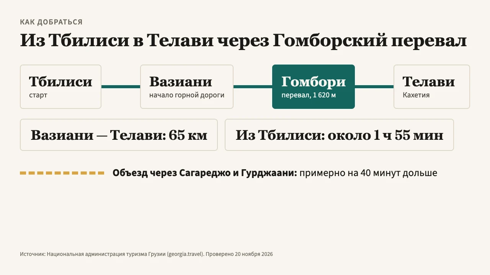
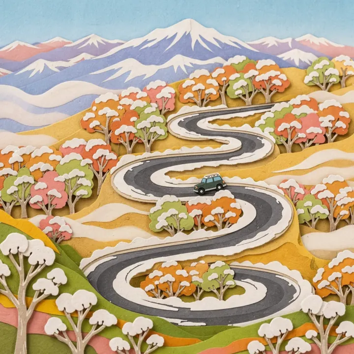
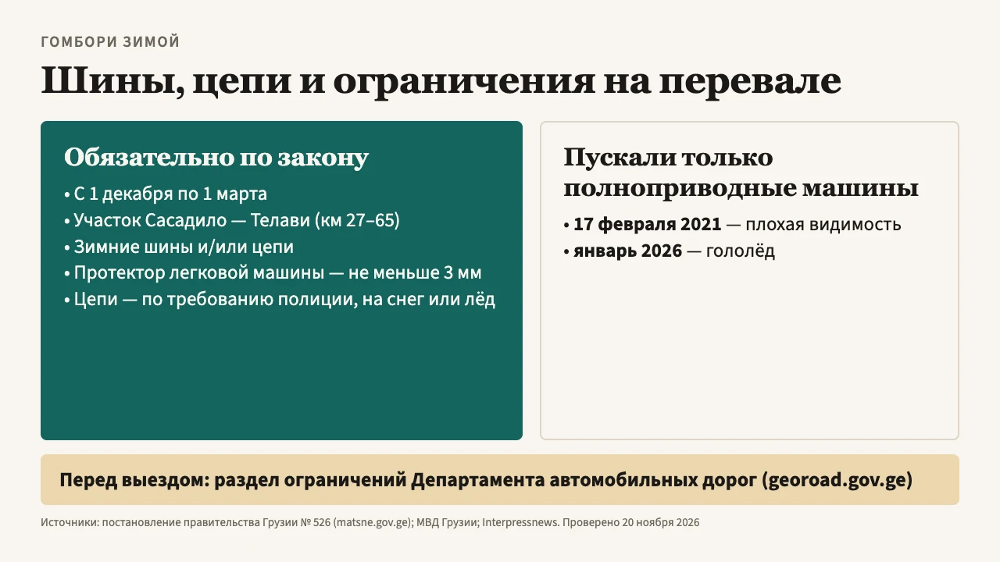
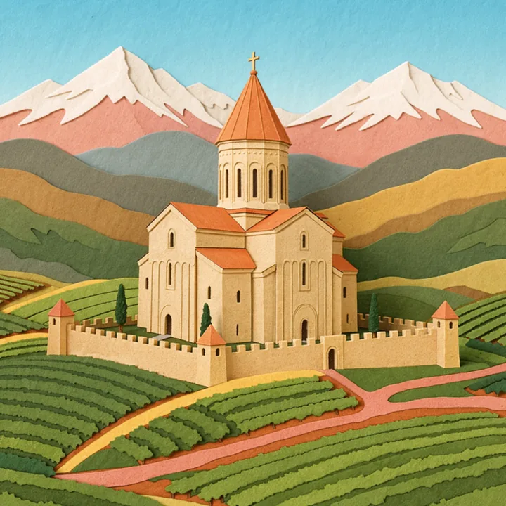
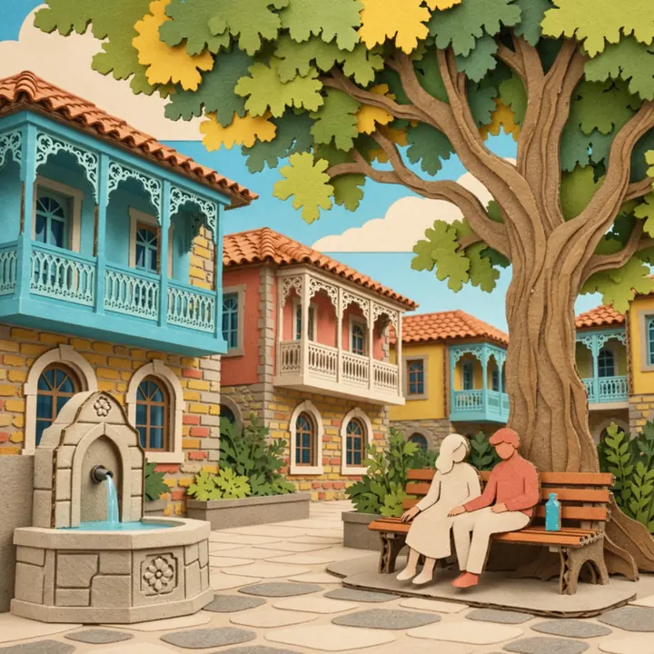
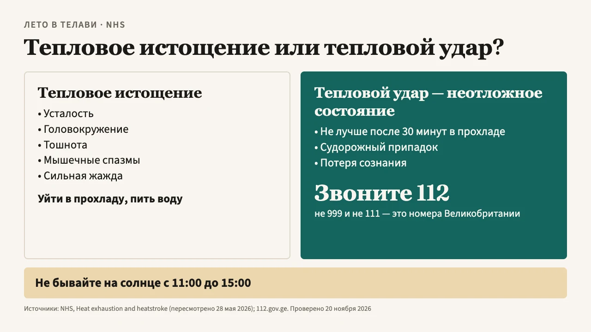
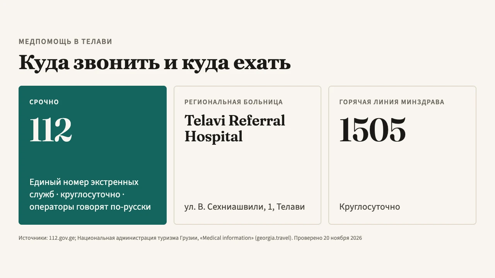

- Гомборский перевал
- 1 620 м
- От Тбилиси
- около 1 ч 55 мин
- Вазиани — Телави
- 65 км
- Объезд через Сагареджо
- +40 мин
- Зимние шины или цепи
- 1 декабря — 1 марта
- Экстренный номер
- 112
Статья входит в «Путеводитель по Грузии». Проверено 22 ноября 2026 года.
Где находится Телави: главный город Кахетии, а не Тель-Авив
Город Телави — административный центр Кахетии, винодельческого края Грузии. История его уходит в бронзовый век.
Названия похожи, и их легко перепутать с Тель-Авивом. Здесь речь только о Грузии.
Сколько ехать и какой дорогой — в разделе о дороге.
Наш совет. Строите маршрут в навигаторе — проверьте, что точка не в Израиле.
Официальный статус: столица или нет
Нет. Администрация туризма на georgia.travel называет город не столицей, а главным городом и административным центром края.
А столицей Кахетинского царства целый век был Греми. О нём — в разделе «Греми».
Как добраться из Тбилиси в Телави
На машине — около 1 ч 55 мин. Прямой путь идёт через горы. Объезд через Сагареджо и Гурджаани длиннее на 40 минут.

Без машины едут на маршрутке или в общем такси. Поезд и самолёт не помогут — почему, сказано ниже.
Едете дальше, в Тушетию? Дорога описана в статье «Тушетия». Как попасть в Сигнахи — в путеводителе «Сигнахи».
На машине: прямая дорога через горы
Прямой путь лежит через Гомборский перевал. Дорога начинается в Тбилиси у посёлка Вазиани и заканчивается в Телави. Длина участка — 65 км. Высшая точка — 1 620 м, она на 45-м километре. Весь путь из Тбилиси по этой, самой короткой дороге — около 94 км.
Трасса асфальтирована, ездить по ней можно круглый год. Но с середины осени перевал может закрыть «молочный туман» или снег.
Загородные дороги часто плохо освещены, а оползни нередки. Сильный дождь и снег на высоте тоже влияют на состояние дорог и мостов. Перед поездкой прочитайте раздел «Дороги: ночь, скот, горы и зима». При аварии звоните в экстренную службу.
Укачивает на серпантине? Советы — в разделе «Если укачивает».
На маршрутке и общем такси
По данным администрации туризма на 2024 год, маршрутки уходят от автостанции Ортачала. Общие такси собираются у станции метро «Исани». В пути — 2–2,5 часа, смотря на чём и каким маршрутом ехать.
Расписание уточняйте на станции: в официальных источниках его нет.
Наш совет. Время обратного рейса спросите у водителя, как только приедете.
Правительство Канады в советах путешественникам предупреждает: маршрутки плохо обслуживаются, и в них часто нет ремней безопасности. Чем их заменить — в статье о безопасности маршруток.
Можно ли доехать на поезде или долететь
Нет. Железнодорожная станция здесь есть, но, по данным на 2024 год, она не работает.
Аэропорт имени Эрекле II стоит в 2 км от Телави, сейчас он учебный. На georgia.travel пишут, что внутренние рейсы «скоро возобновятся». Оператор аэропортов Грузии тоже пишет о будущем: аэропорт «будет обслуживать в основном внутренние рейсы». Расписания регулярных пассажирских рейсов ни там, ни там нет.
Гомборский перевал зимой: шины, цепи и ограничения
Дорога открыта круглый год. Но зимой бывают дни, когда на трассу из Вазиани в Телави пускают только полноприводные машины — с двумя и более ведущими мостами.
17 февраля 2021 года так было на км 1–62 из-за плохой видимости. В январе 2026 года, по сообщению Interpressnews, — на км 36–64 из-за гололёда.
Перед выездом смотрите раздел ограничений Департамента автомобильных дорог.

Прямая дорога или объезд через Сагареджо
Прямой путь короче по времени: вариант через Сагареджо и Гурджаани добавляет около 40 минут.
Наш совет. Если на перевале туман, снег или действует ограничение, рассмотрите объезд. Не ждите на серпантине, пока прояснится.
Зимние правила: что требует закон
С 1 декабря по 1 марта на участке Сасадило — Телави обязательны зимние шины и/или цепи. Это км 27–65 дороги Вазиани — Гомбори — Телави. Так требует Постановление Правительства Грузии № 526 от 27 декабря 2023 года. Правило действует с 1 января 2024 года, а участки из перечня отмечены знаком со снежинкой.
- по погоде полиция может потребовать цепи хотя бы на ведущих колёсах;
- надевают их только на снег или лёд, и нужны заводские, не самодельные;
- протектор у легковой машины — не меньше 3 мм;
- шина — не старше 10 лет.
У правительства Канады в советах путешественникам есть похожее правило — для любых гор зимой.
Наш совет. Берёте машину напрокат зимой — спросите прокатчика, готова ли она к этим правилам.

Открыта ли дорога сегодня: где проверить
Смотрите страницу ограничений Департамента автомобильных дорог — georoad.gov.ge, на английском и грузинском. Среди записей с 9 по 22 ноября 2026 года этой трассы нет. Горячая линия департамента — 032 2 31 30 76, справочная — 032 237 05 08.
На главной странице департамента висит сообщение: идёт восстановление участка этой трассы, повреждённого оползнем. Где именно и до какого срока — спросите по горячей линии департамента.
Наш совет. Проверяйте страницу утром в день поездки.
Что посмотреть в Телави
Главные достопримечательности Телави — в центре: крепость Батонис-Цихе с дворцом Эрекле II и древний платан. Ещё четыре достопримечательности рядом — монастыри Алаверди, Икалто, Шуамта и Греми.
Национальная администрация туризма называет город культурным центром Кахетии, средневековым городом с долгой историей.
Алаверди и Греми — в 30 и 15–20 минутах езды, их можно объединить в маршрут на день.
Наш совет. Монастыри смотрите утром. Платан и стены крепости оставьте на конец дня, а часы работы музея уточните на месте.
Край ещё и винный. Квеври — способ виноделия, которому больше 8 000 лет. О погребах и дегустации — в разделе о вине и квеври.
Батонис-Цихе и дворец Эрекле II
Крепость располагается в центре Телави. Это один из важнейших памятников светской грузинской архитектуры позднего феодализма.
Дворец, восточные ворота и баню построили при царе Арчиле в XVII веке. Придворная церковь и западные ворота — времён царя Эрекле (Ираклия) II, XVIII век. Внутри — музей истории царей Кахетии.
Эрекле II — один из самых любимых царей страны. Он родился в 1720 году и умер в своём дворце в 78 лет. По данным georgia.travel, дворец Эрекле — единственный в стране царский дворец, сохранившийся до наших дней.

900-летний платан
По словам Национальной администрации туризма, дереву 900 лет. Растёт оно в самом центре города.
Монастырь Алаверди
Это царский монастырь XI века в 30 минутах езды от Телави. Высота собора Святого Георгия вместе с куполом — больше 40 метров.
Каждый год 27 сентября здесь проходит праздник Алавердоба. При монастыре есть виноградник: на нём растут 80 сортов винограда со всей страны.

Икалто и Шуамта
Икалто стоит примерно в 12 км от города. Монастырь здесь основал в VI веке Зенон, один из сирийских отцов. Академию в XI–XII веках основал богослов Арсен Икалтоели, сейчас она в руинах. В те же века Телави был центром образования в регионе.
Старый и новый монастыри Шуамта стоят рядом с комплексом Ванта.
Греми: бывшая столица царства
Здесь целый век была столица царства. Церковь Архангелов построил царь Леван в 1565 году.
Ехать сюда 15–20 минут по дороге в Кварели. Греми относится уже к муниципалитету Кварели.
Жара летом: как не перегреться
NHS, британская служба здравоохранения, советует в жаркую погоду избегать солнца с 11:00 до 15:00.

Среди признаков теплового истощения NHS называет:
- усталость;
- головокружение;
- тошноту;
- мышечные спазмы;
- сильную жажду.
Тепловой удар — неотложное состояние. Звоните 112, а не британские 999 или 111 из советов NHS, если после 30 минут охлаждения лучше не стало. Звоните сразу при судорожном припадке или потере сознания.
Летом в горах опасны молнии и лесные пожары.
Наш совет. Крепость и монастыри смотрите до 11:00 или после 15:00. На горную дорогу берите воду.
Первая помощь — в разделе «Тепловое истощение и тепловой удар». Если дальше едете в Тбилиси, прочитайте, как пережить там лето.

Медпомощь в Телави: больница, 112 и горячая линия 1505
Срочно — 112. Есть здесь и региональная больница — Telavi Referral Hospital. У Минздрава Грузии есть горячая линия 1505, она работает круглосуточно.

Как вызвать скорую
Правительство Великобритании советует: «наберите 112 и попросите скорую». Это единый номер экстренных служб страны, он работает с 2012 года.
Операторы отвечают в любое время суток по всей стране на шести языках: грузинском, английском, азербайджанском, армянском, турецком и русском.
Позвонить можно и с телефона без SIM-карты. Но телефон должен быть в зоне сети грузинского оператора — Magticom, Geocell или Beeline.
Наш совет. Скажите диспетчеру, что случилось и где вы: адрес или километр трассы. Назовите номер для обратного звонка.
Пошагово — в разделе о звонке в экстренную службу. Там же — кто платит за скорую.
Больница: адрес и телефон
Telavi Referral Hospital стоит на ул. В. Сехниашвили, 1, телефон — 032 2 600 600. Она есть в списке региональных больниц на georgia.travel.
Вне Тбилиси возможности медицинских учреждений ограничены. В сельских районах не хватает медицинских материалов и персонала.
Если помощь нужна не срочно — осмотр или анализы, — ищите в каталоге клиник Телави.
Полис должен покрывать медицинскую эвакуацию — так советует GOV.UK. Какой полис нужен при въезде — в разделе о страховке.
Наш совет. До поездки сохраните в заметках телефона номер экстренной службы, горячую линию Минздрава и адрес Telavi Referral Hospital.
Частые вопросы
Телави и Тель-Авив — это одно и то же?
Нет. Телави находится в Грузии, это административный центр винодельческого края. Тель-Авив — в Израиле. Названия похожи, и ИИ-помощники иногда их путают.
Сколько ехать от Тбилиси до Телави?
Около 1 ч 55 мин на машине, по данным администрации туризма. Горный участок от Вазиани — 65 км. Объезд через Сагареджо и Гурджаани займёт примерно на 40 минут больше.
Как добраться без машины?
На маршрутке от автостанции Ортачала или в общем такси от метро «Исани». По данным на 2024 год, путь занимает 2–2,5 часа, а поезд не ходит. Расписание маршруток уточняйте на станции.
Открыта ли дорога через Гомбори зимой?
Да, круглый год. Но бывают дни, когда пускают только полноприводные машины. С 1 декабря по 1 марта нужна зимняя резина или цепи, а статус дороги смотрите у Департамента автомобильных дорог.
Можно ли долететь до Телави на самолёте?
Нет. Аэропорт имени Эрекле II сейчас учебный, а внутренние рейсы только обещают возобновить, без даты. Так что ехать придётся по дороге.
Как не перегреться летом?
С 11:00 до 15:00 держитесь в тени. Тревожные признаки — усталость, головокружение, тошнота, мышечные спазмы и сильная жажда. Звоните 112, если после получаса охлаждения не легче, а при судорожном припадке или потере сознания — сразу.
Куда обращаться за медпомощью?
Срочно — 112. Региональная больница Telavi Referral Hospital — на ул. В. Сехниашвили, 1. Горячая линия Минздрава 1505 работает круглосуточно.
Где была столица Кахетинского царства?
В Греми, целый век. Там стоит церковь Архангелов 1565 года. Телави сегодня — административный центр края.
Источники
- Национальная администрация туризма Грузии: что посмотреть в Телави — главный город Кахетии, дорога, маршрутки, станция (на английском) ↑
- Национальная администрация туризма Грузии: Телави — культурный центр, время в пути, Эрекле II, платан, Шуамта, квеври (на английском) ↑
- Национальная администрация туризма Грузии: Гомбори — дорога в Кахетию, 65 км, 1 620 м, объезд (на английском) ↑
- Matsne: Постановление Правительства Грузии № 526 от 27 декабря 2023 года — участки с зимними шинами (на грузинском) ↑
- МВД Грузии: зимние шины с 1 января 2024 года — сроки, протектор, цепи (на английском) ↑
- МВД Грузии: ограничение на дороге Вазиани — Гомбори — Телави, 17 февраля 2021 года (на английском) ↑
- Interpressnews: ограничение на участке Верона — Телави, 3 января 2026 года (на английском) ↑
- Департамент автомобильных дорог Грузии: ограничения движения (на английском) ↑
- NHS: тепловое истощение и тепловой удар, 28 мая 2026 года (на английском) ↑
- Служба 112: о службе (на английском) ↑
- Национальная администрация туризма Грузии: медицинская информация — больницы, 112, горячая линия 1505 (на английском) ↑
- Национальная администрация туризма Грузии: крепость Греми (на английском) ↑
- GOV.UK: безопасность — дороги, оползни, молнии и пожары (на английском) ↑
- Правительство Канады: советы путешественникам, Грузия, 27 августа 2026 года (на английском) ↑
- Национальная администрация туризма Грузии: аэропорты Грузии (на английском) ↑
- Департамент автомобильных дорог Грузии: главная страница (на английском) ↑
- Национальная администрация туризма Грузии: монастырь Алаверди (на английском) ↑
- Национальная администрация туризма Грузии: монастырский комплекс Греми (на английском) ↑
- Национальная администрация туризма Грузии: крепость Батонис-Цихе (на английском) ↑
- Национальная администрация туризма Грузии: музей царя Эрекле II (на английском) ↑
- Национальная администрация туризма Грузии: монастырский комплекс Икалто (на английском) ↑
- Служба 112: языки операторов, звонок без SIM-карты, зона покрытия (на английском) ↑
- GOV.UK: здоровье — 112, медпомощь вне Тбилиси, эвакуация (на английском) ↑
- Объединённые аэропорты Грузии: аэропорт Телави (на английском) ↑
Это справочная информация, а не медицинская консультация: лечение назначает врач. Проверено 22 ноября 2026 года.